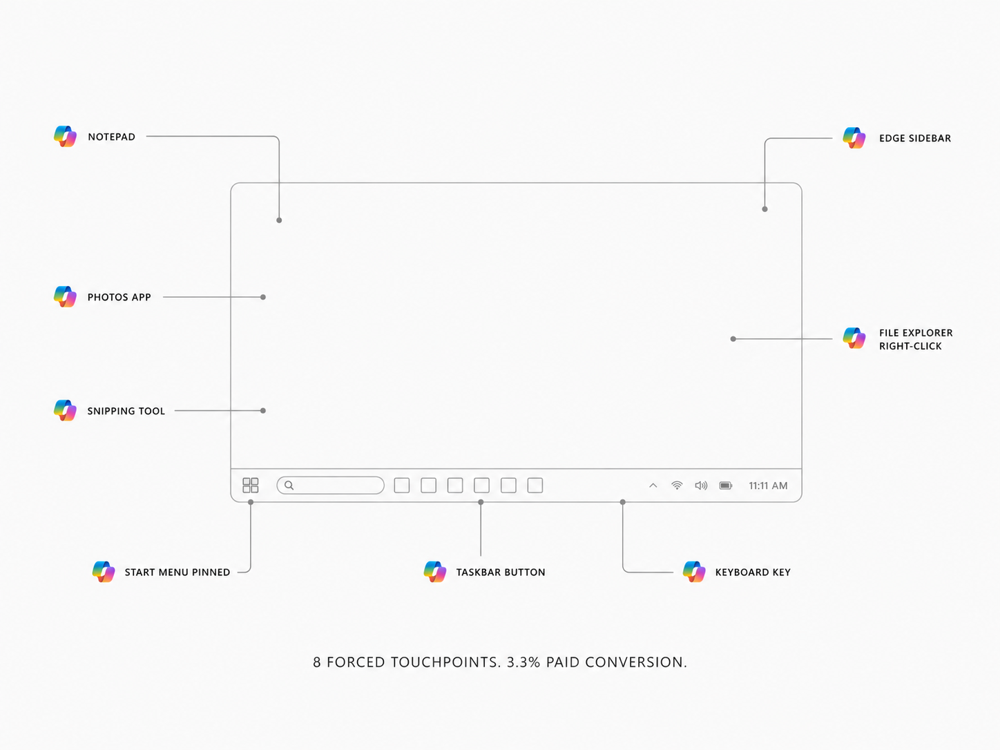
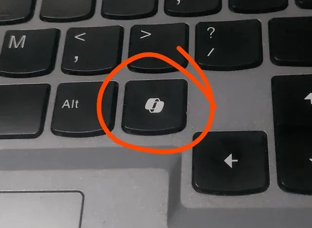
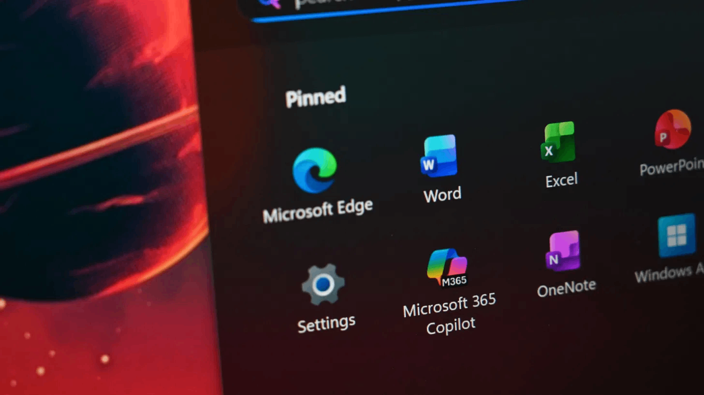
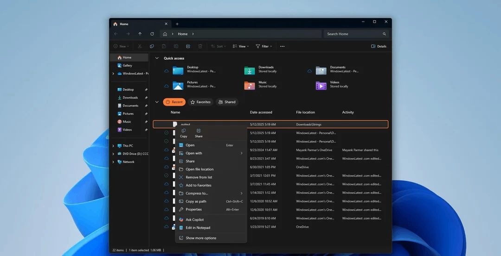

Microsoft didn't have a model problem. It had a trust problem.
Copilot had the most aggressive distribution of any software feature in Windows history: a dedicated keyboard key, a pinned Start menu slot, a taskbar button, and a right-click entry in File Explorer. Distribution at that scale still didn't translate to voluntary adoption. When users had access to alternatives, 8% chose Copilot. The failure wasn't reach. It was that every forced touchpoint arrived before trust was established. Once the first interaction disappointed, every subsequent sighting of the Copilot icon became a negative signal. More placement accelerated the damage. Flow is designed around the opposite sequence: trust first, then presence.




Reactive. Placement-first. Brand-led.
Copilot sits in a sidebar and waits to be asked. Every interaction starts from zero. The user carries the context. The AI provides the response.
Proactive. Context-first. Earned.
Based on your calendar and the apps you have open, Flow prepares the next workspace before you need to switch. You confirm or dismiss. Nothing happens automatically.
![Two mind maps side by side, divided by the word 'Instead'. Left, 'The problem' in red: 'Context switching fails the user' branches to Every switch starts from zero, No context, AI appears before it's earned its place, Forced before trust, Surveillance fear (user feels monitored, not helped), Too many surfaces, User doesn't know which tool to use, and Output unreliable (fixing AI output takes longer than doing it). Right, 'Why Flow works' in iris: 'User trusts Flow' branches to Scoped (only what you granted, nothing outside), You decide what Flow can see, Permission first, Workspace ready before you ask, Proactive, Transparent (see what's coming before it happens), and Ambient (one surface, earned, gone when done).](uploads/infographic-mindmap-a39bdfb2.png)
"This isn't an argument that Copilot is a bad product."
Enterprise Copilot, when given organisational context, demonstrably helps. The problem is that consumer trust doesn't recover on a product timeline. Microsoft's March 2026 response confirms this. They didn't fix Copilot, they started removing the name from surfaces where it had failed. That points to a trust problem that product improvements alone cannot resolve. The underlying AI capability needed a different surface, one that hadn't already spent its trust budget.